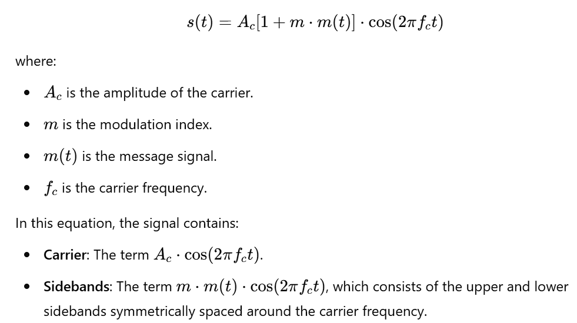
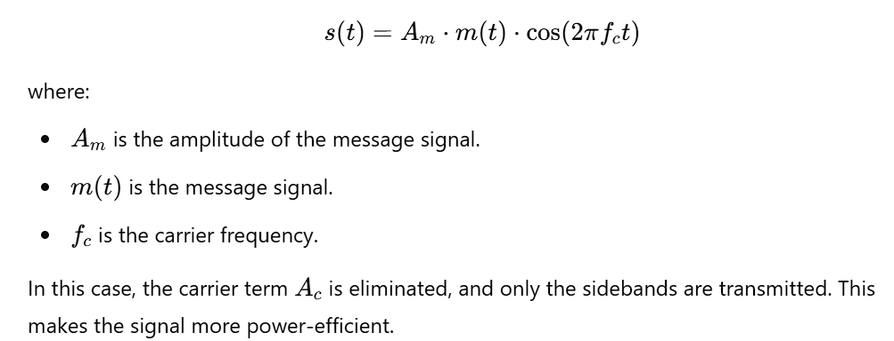
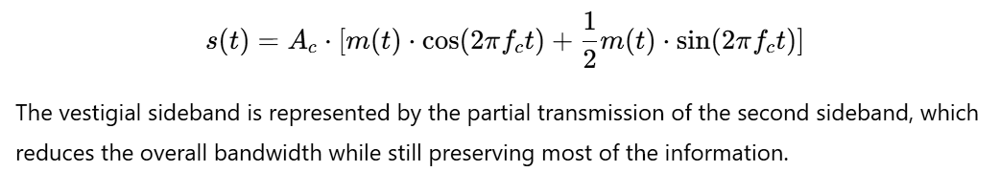
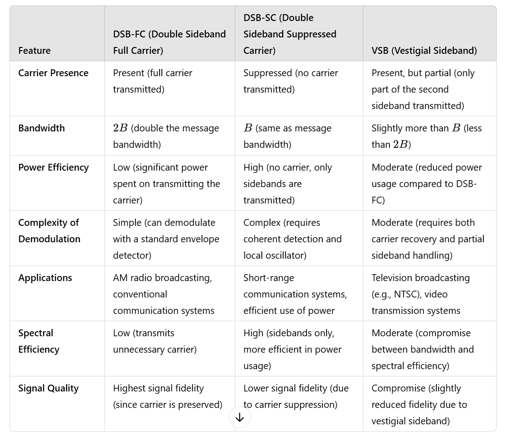

DSB-FC, DSB-SC, VSB Overview
DSB-FC (Double Sideband Full Carrier)
- Definition: In DSB-FC, both the upper and lower sidebands are transmitted, along with
the full unmodulated carrier.
- Mathematical Representation: The modulated signal 𝑠(𝑡) for DSB-FC is given by:

- Bandwidth: The bandwidth of a DSB-FC signal is twice the bandwidth of the message
signal. If the message has bandwidth 𝐵, the total bandwidth of the modulated signal is 2𝐵.
- Power Efficiency: The carrier is always present, which means that a significant portion
of the transmitted power is spent on transmitting the carrier, which does not carry any information.
This is inefficient in terms of power utilization.
DSB-SC (Double Sideband Suppressed Carrier)
- Definition: In DSB-SC, the carrier is suppressed, and only the sidebands (upper and
lower) are transmitted. This reduces the power wasted on transmitting the carrier, making it more
efficient than DSB-FC.
- Mathematical Representation: The modulated signal 𝑠(𝑡) for DSB-SC is given by:

- Bandwidth: The bandwidth of a DSB-SC signal is the same as the bandwidth of the message
signal 𝐵. Since there is no carrier, the bandwidth required is just the bandwidth of the sidebands.
- Power Efficiency: The carrier is suppressed, so the transmitted power is more
efficient, as all of it is used to convey the information contained in the sidebands.
- Demodulation: DSB-SC requires a more complex demodulation process. The receiver needs
to regenerate a local carrier signal (using a technique like coherent detection) to demodulate the
message, which increases system complexity.
VSB (Vestigial Sideband)
- Definition: VSB is a compromise between DSB-FC and DSB-SC. In VSB modulation, one of
the sidebands is transmitted in full, while the other is partially transmitted (i.e., the sideband is
"vestigial" or "partially suppressed"). This allows for bandwidth efficiency while minimizing
distortion.
- Mathematical Representation: The modulated signal 𝑠(𝑡) for VSB is given by:

- Bandwidth: VSB is more power-efficient than DSB-FC because it eliminates some of the
unnecessary portions of the sidebands while retaining most of the message information.
- Applications: VSB is used in applications where bandwidth is constrained, such as in TV
broadcasting. For instance, NTSC television uses VSB to transmit video signals. The vestigial sideband
allows for efficient bandwidth usage while still preserving the video quality.
Key Differences:
Carrier Presence:
- DSB-FC transmits both the carrier and the sidebands, leading to higher power consumption due to the
carrier.
- DSB-SC suppresses the carrier, transmitting only the sidebands, resulting in better power efficiency.
- VSB transmits the full upper sideband and a part of the lower sideband (the vestigial part), reducing
bandwidth while still carrying most of the information.
Bandwidth Efficiency:
- DSB-FC has the widest bandwidth requirement, as it transmits both sidebands and the carrier.
- DSB-SC is the most bandwidth-efficient, transmitting only the sidebands.
- VSB reduces bandwidth usage compared to DSB-FC by partially suppressing the sideband, making it more
bandwidth-efficient without a full loss of quality.
Power Efficiency:
- DSB-FC is the least power-efficient because a significant portion of the transmitted power is spent on
the carrier, which doesn't carry any information.
- DSB-SC is the most power-efficient because the carrier is removed, and all transmitted power is used to
convey the information.
- VSB is more power-efficient than DSB-FC but less so than DSB-SC, since the vestigial sideband still
consumes some bandwidth and power.
Applications:
- DSB-FC is used in traditional AM radio broadcasting.
- DSB-SC is used in systems where power efficiency is a priority and where coherent demodulation is
feasible.
- VSB is used in television broadcasting (e.g., NTSC standard), where bandwidth is limited and the quality
of the signal must be preserved while using less bandwidth.
